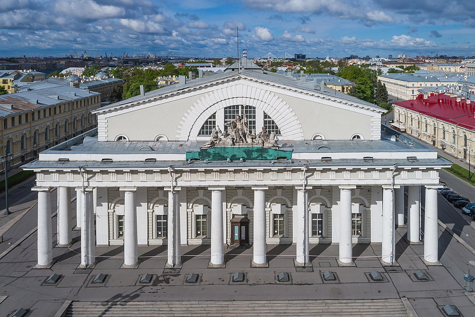

О компании
ПАО «СПБ Биржа» (тикер SPBE) — российская биржа, исторически специализировавшаяся на торгах иностранными ценными бумагами для частных и институциональных инвесторов. Компания предоставляет инфраструктуру для организованных торгов, клиринга и расчётов.
Биржа развивалась как площадка, ориентированная на доступ розничных инвесторов к широкому спектру финансовых инструментов. В разные периоды через площадку были доступны акции, депозитарные расписки, а также товарные инструменты.

Основные направления деятельности:
- организация биржевых торгов;
- клиринговая деятельность;
- депозитарные и расчётные услуги;
- развитие инфраструктуры финансового рынка.
История
Площадка прошла путь от региональной товарной биржи до современной высокотехнологичной площадки, предоставляющей доступ к торгам в режиме, приближённом к круглосуточному. Развитие сопровождалось расширением линейки инструментов и ростом числа клиентов — частных инвесторов.
Важной частью модели биржи было предоставление российским инвесторам доступа к иностранным ценным бумагам через единую инфраструктуру, с расчётами в рублях и иностранной валюте.
Год создания и основатели
Современная организация ведёт свою историю от биржевых структур, создававшихся в России в конце 1990-х — начале 2000-х годов. Учредителями выступали профессиональные участники финансового рынка — инвестиционные компании и банки. Точный состав акционеров и руководства раскрывается в официальной отчётности эмитента.
Сегодня
СПБ Биржа продолжает развивать инфраструктурные сервисы, расширять линейку инструментов для российских инвесторов и совершенствовать технологическую платформу торгов и клиринга. Акции компании торгуются под тикером SPBE.
Подробную и актуальную информацию можно найти на официальном сайте СПБ Биржи.